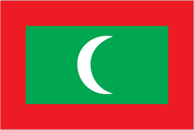

South Asia :: MALDIVES
Introduction :: MALDIVES
-
A sultanate since the 12th century, the Maldives became a British protectorate in 1887. It became a republic in 1968, three years after independence. President Maumoon Abdul GAYOOM dominated the islands' political scene for 30 years, elected to six successive terms by single-party referendums. Following political demonstrations in the capital Male in August 2003, GAYOOM and his government pledged to embark upon a process of liberalization and democratic reforms, including a more representative political system and expanded political freedoms. Political parties were legalized in 2005.In June 2008, a constituent assembly - termed the "Special Majlis" - finalized a new constitution ratified by GAYOOM in August 2008. The first-ever presidential elections under a multi-candidate, multi-party system were held in October 2008. GAYOOM was defeated in a runoff poll by Mohamed NASHEED, a political activist who had been jailed several years earlier by the GAYOOM regime. NASHEED faced a number of challenges including strengthening democracy and combating poverty and drug abuse. In early February 2012, after several weeks of street protests in response to his ordering the arrest of a top judge, NASHEED resigned the presidency and handed over power to Vice President Mohammed WAHEED Hassan Maniku. In mid-2012, a Commission of National Inquiry was established by the government to probe events leading up to NASHEED's resignation. Though the commission found no evidence of a coup, the report recommended strengthening the country's democratic institutions to avert similar events in the future, and to investigate alleged police misconduct during the crisis. NASHEED, WAHEED, and Abdulla YAMEEN ran in the 2013 elections with YAMEEN ultimately winning the presidency after three rounds of voting. Maldivian officials have played a prominent role in international climate change discussions (due to the islands' vulnerability to rising sea-level).
Geography :: MALDIVES
-
Southern Asia, group of atolls in the Indian Ocean, south-southwest of India3 15 N, 73 00 EAsiatotal: 298 sq kmland: 298 sq kmwater: 0 sq kmcountry comparison to the world: 210about 1.7 times the size of Washington, DC0 km644 kmmeasured from claimed archipelagic straight baselinesterritorial sea: 12 nmcontiguous zone: 24 nmexclusive economic zone: 200 nmtropical; hot, humid; dry, northeast monsoon (November to March); rainy, southwest monsoon (June to August)flat, with white sandy beachesmean elevation: 1.8 melevation extremes: lowest point: Indian Ocean 0 mhighest point: 8th tee, golf course, Villingi Island 5 mfishagricultural land: 23.3%arable land 10%; permanent crops 10%; permanent pasture 3.3%forest: 3%other: 73.7% (2011 est.)0 sq km (2012)about a third of the population lives in the centrally located capital city of Male and almost a tenth in southern Addu City; the remainder of the populace is spread over the 200 or so populated islands of the archipelagotsunamis; low elevation of islands makes them sensitive to sea level risedepletion of freshwater aquifers threatens water supplies; coral reef bleachingparty to: Biodiversity, Climate Change, Climate Change-Kyoto Protocol, Desertification, Hazardous Wastes, Law of the Sea, Ozone Layer Protection, Ship Pollutionsigned, but not ratified: none of the selected agreementssmallest Asian country; archipelago of 1,190 coral islands grouped into 26 atolls (200 inhabited islands, plus 80 islands with tourist resorts); strategic location astride and along major sea lanes in Indian Ocean
People and Society :: MALDIVES
-
392,709 (July 2017 est.)country comparison to the world: 176noun: Maldivian(s)adjective: MaldivianSouth Indians, Sinhalese, ArabsDhivehi (official, dialect of Sinhala, script derived from Arabic), English (spoken by most government officials)Sunni Muslim (official)0-14 years: 21.4% (male 42,871/female 41,162)15-24 years: 20.21% (male 45,547/female 33,804)25-54 years: 48.1% (male 106,701/female 82,187)55-64 years: 5.85% (male 11,312/female 11,667)65 years and over: 4.45% (male 8,042/female 9,416) (2017 est.)total dependency ratio: 38youth dependency ratio: 32.3elderly dependency ratio: 5.7potential support ratio: 17.7 (2015 est.)total: 28.2 yearsmale: 28.1 yearsfemale: 28.3 years (2017 est.)country comparison to the world: 138-0.06% (2017 est.)country comparison to the world: 20616.1 births/1,000 population (2017 est.)country comparison to the world: 1154 deaths/1,000 population (2017 est.)country comparison to the world: 209-12.7 migrant(s)/1,000 population (2017 est.)country comparison to the world: 214about a third of the population lives in the centrally located capital city of Male and almost a tenth in southern Addu City; the remainder of the populace is spread over the 200 or so populated islands of the archipelagourban population: 47.5% of total population (2017)rate of urbanization: 3.52% annual rate of change (2015-20 est.)MALE (capital) 156,000 (2014)at birth: 1.05 male(s)/female0-14 years: 1.04 male(s)/female15-24 years: 1.37 male(s)/female25-54 years: 1.34 male(s)/female55-64 years: 1 male(s)/female65 years and over: 0.89 male(s)/femaletotal population: 1.23 male(s)/female (2016 est.)23.9 yearsnote: median age at first birth among women 25-29 (2009 est.)68 deaths/100,000 live births (2015 est.)country comparison to the world: 84total: 22 deaths/1,000 live birthsmale: 24.4 deaths/1,000 live birthsfemale: 19.6 deaths/1,000 live births (2017 est.)country comparison to the world: 74total population: 75.8 yearsmale: 73.5 yearsfemale: 78.3 years (2017 est.)country comparison to the world: 971.73 children born/woman (2017 est.)country comparison to the world: 16834.7% (2009)13.7% of GDP (2014)country comparison to the world: 41.58 physicians/1,000 population (2010)4.3 beds/1,000 population (2009)improved:urban: 99.5% of populationrural: 97.9% of populationtotal: 98.6% of populationunimproved:urban: 0.5% of populationrural: 2.1% of populationtotal: 1.4% of population (2015 est.)improved:urban: 97.5% of populationrural: 98.3% of populationtotal: 97.9% of populationunimproved:urban: 2.5% of populationrural: 1.7% of populationtotal: 2.1% of population (2015 est.)NANANA8.6% (2016)country comparison to the world: 14817.8% (2009)country comparison to the world: 365.7% of GDP (2015)country comparison to the world: 26definition: age 15 and over can read and writetotal population: 99.3%male: 99.8%female: 98.8% (2015 est.)total: 25.4%male: 29.1%female: 21.4% (2010 est.)country comparison to the world: 48
Government :: MALDIVES
-
conventional long form: Republic of Maldivesconventional short form: Maldiveslocal long form: Dhivehi Raajjeyge Jumhooriyyaalocal short form: Dhivehi Raajjeetymology: archipelago apparently named after the main island (and capital) of Male; the word "Maldives" means "the islands (dives) of Male"; alternatively, the name may derive from the Sanskrit word "maladvipa" meaning "garland of islands"; Dhivehi Raajje in Maldivian means "Kingdom of the Dhivehi people"presidential republicname: Malegeographic coordinates: 4 10 N, 73 30 Etime difference: UTC+5 (10 hours ahead of Washington, DC, during Standard Time)21 administrative atolls (atholhuthah, singular - atholhu); Addu, Ariatholhu Dhekunuburi, Ariatholhu Uthuruburi, Faadhippolhu, Felidhuatholhu, Fuvammulah, Hahdhunmathi, Huvadhuatholhu Dhekunuburi, Huvadhuatholhu Uthuruburi, Kolhumadulu, Maale, Maaleatholhu, Maalhosmadulu Dhekunuburi, Maalhosmadulu Uthuruburi, Miladhunmadulu Dhekunuburi, Miladhunmadulu Uthuruburi, Mulakatholhu, Nilandheatholhu Dhekunuburi, Nilandheatholhu Uthuruburi, Thiladhunmathee Dhekunuburi, Thiladhunmathee Uthuruburi26 July 1965 (from the UK)Independence Day, 26 July (1965)history: many previous; latest ratified 7 August 2008amendments: proposed by Parliament; passage requires at least three-quarters majority vote by its membership and the signature of the president of the republic; passage of amendments to constitutional articles on rights and freedoms and the terms of office of Parliament and of the president also requires a majority vote in a referendum; amended 2015 (2017)Islamic religious legal system with English common law influences, primarily in commercial mattershas not submitted an ICJ jurisdiction declaration; accepts ICCt jurisdictioncitizenship by birth: nocitizenship by descent only: at least one parent must be a citizen of the Maldivesdual citizenship recognized: yesresidency requirement for naturalization: unknown18 years of age; universalchief of state: President Abdulla YAMEEN Abdul Gayoom (since 17 November 2013); Vice President Abdulla JIHAD (since 21 June 2016); the president is both chief of state and head of government; note - Vice President Mohamed JAMEEL was removed from office 22 July 2015 and Vice President Ahmed ADHEEB Abdul Ghafoor was removed from office 5 November 2015head of government: President Abdulla YAMEEN Abdul Gayoom (since 17 November 2013); Vice President Abdulla JIHAD (since 21 June 2016); note - Vice President Mohamed JAMEEL was removed from office 22 July 2015 and Vice President Ahmed ADHEEB Abdul Ghafoor was removed from office 5 November 2015cabinet: Cabinet of Ministers appointed by the president, approved by Parliamentelections/appointments: president directly elected by absolute majority popular vote in 2 rounds if needed for a 5-year term (eligible for a second term); the election held on 7 September 2013 was annulled by the Supreme Court; rerun of first round held on 9 November 2013 and a runoff held on 16 November 2013 (next election to be held in 2018)election results: percent of vote in first round - Mohamed NASHEED (MDP) 46.9%, Abdulla YAMEEN Abdul Gayoom (PPM) 29.7%, Qasim IBRAHIM (JP) 23.3%; Abdulla YAMEEN Abdul Gayoom elected president in second round - Abdulla YAMEEN Abdul Gayoom 51.4%, Mohamed NASHEED 48.6%description: unicameral Parliament or People's Majlis (85 seats; members directly elected in multi-seat constituencies by simple majority vote to serve 5-year terms)elections: last held on 22 March 2014 (next to be held in 2019)election results: percent of vote - MDP 40.8%, PPM 27.7%, JP 13.6%, MDA 4.0%, AP 2.7% other 0.3%, independent 10.9%; seats by party - PPM 33, MDP 26, JP 15, MDA 5, AP 1, independent 5highest court(s): Supreme Court (consists of the chief justice and 4 judges)judge selection and term of office: Supreme Court judges appointed by the president in consultation with the Judicial Service Commission - a separate 10-member body of selected high government officials and the public - and upon confirmation by voting members of the People's Majlis; judges serve until mandatory retirement at age 70subordinate courts: High Court; Criminal, Civil, Family, Juvenile, and Drug Courts; Magistrate Courts (on each of the inhabited islands)Adhaalath (Justice) Party or AP [Sheikh Imran ABDULLA]Maldives Development Alliance or MDA [Ahmed Shiyam MOHAMED]Maldivian Democratic Party or MDP [Hassan LATHEEF]Progressive Party of Maldives or PPM [Abdulla YAMEEN]Republican (Jumhooree) Party or JP [Qasim IBRAHIM]other: various unregistered political partiesADB, AOSIS, C, CP, FAO, G-77, IBRD, ICAO, ICC (NGOs), ICCt, IDA, IDB, IFAD, IFC, IFRCS, ILO, IMF, IMO, Interpol, IOC, IOM, IPU, ITU, MIGA, NAM, OIC, OPCW, SAARC, SACEP, UN, UNCTAD, UNESCO, UNIDO, UNWTO, UPU, WCO, WHO, WIPO, WMO, WTOchief of mission: Ambassador Ali NASEER Mohamed (since 21 July 2017)chancery: 801 Second Avenue, Suite 400E, New York, NY 10017telephone: [1] (212) 599-6194 and 599-6195FAX: [1] (212) 661-6405the US does not have an embassy in Maldives; the US Ambassador to Sri Lanka is accredited to Maldivesred with a large green rectangle in the center bearing a vertical white crescent moon; the closed side of the crescent is on the hoist side of the flag; red recalls those who have sacrificed their lives in defense of their country, the green rectangle represents peace and prosperity, and the white crescent signifies Islamcoconut palm, yellowfin tuna; national colors: red, green, whitename: "Gaumee Salaam" (National Salute)lyrics/music: Mohamed Jameel DIDI/Wannakuwattawaduge DON AMARADEVAnote: lyrics adopted 1948, music adopted 1972; between 1948 and 1972, the lyrics were sung to the tune of "Auld Lang Syne"
Economy :: MALDIVES
-
Maldives has quickly become a middle-income country, driven by the rapid growth of its tourism and fisheries sectors, but the country still contends with a large and growing fiscal deficit. Economic growth slowed to 2.8% in 2015, mainly because of a decline in tourists from China and Russia. Despite lower growth, tourism-related tax receipts increased by 13% in 2015 because of higher tax rates. This increase in tax receipts led to higher usable foreign exchange reserves that helped partially fund increases in construction related imports.In 2015, Maldives’ Parliament passed a constitutional amendment legalizing foreign ownership of land; foreign land-buyers must reclaim at least 70% of the desired land from the ocean and invest at least $1 billion in a construction project approved by Parliament.Diversifying the economy beyond tourism and fishing, reforming public finance, increasing employment opportunities, and combating corruption, cronyism, and a growing drug problem are near-term challenges facing the government. Over the longer term, Maldivian authorities worry about the impact of erosion and possible global warming on their low-lying country; 80% of the area is 1 meter or less above sea level.$6.483 billion (2016 est.)$6.161 billion (2015 est.)$5.9 billion (2014 est.)note: data are in 2016 dollarscountry comparison to the world: 169$4.238 billion (2016 est.)3.9% (2016 est.)3.3% (2015 est.)7.6% (2014 est.)country comparison to the world: 69$18,300 (2016 est.)$17,900 (2015 est.)$17,700 (2014 est.)note: data are in 2016 dollarscountry comparison to the world: 1040.4% of GDP (2016 est.)12.7% of GDP (2015 est.)16.8% of GDP (2014 est.)country comparison to the world: 173household consumption: NA%government consumption: NA%investment in fixed capital: NA%investment in inventories: NA%exports of goods and services: 108.2%imports of goods and services: 89.3% (2014 est.)agriculture: 3%industry: 16%services: 81% (2015 est.)coconuts, corn, sweet potatoes; fishtourism, fish processing, shipping, boat building, coconut processing, woven mats, rope, handicrafts, coral and sand mining14% (2012 est.)country comparison to the world: 6195,100 (2014)country comparison to the world: 176agriculture: 15%industry: 15%services: 70% (2010 est.)11.6% (2013 est.)11% (2012 est.)country comparison to the world: 14516% (2008 est.)lowest 10%: 1.2%highest 10%: 33.3% (FY09/10)38.4 (2009 est.)37.4 (2004 est.)country comparison to the world: 71revenues: $1.481 billionexpenditures: $1.7 billion (2016 est.)43.8% of GDP (2016, est.)country comparison to the world: 27-6.5% of GDP (2016, est.)country comparison to the world: 17881.5% of GDP (2016 est.)72% of GDP (2015 est.)country comparison to the world: 34calendar year0.8% (2016 est.)1.4% (2015 est.)country comparison to the world: 847% (31 December 2013)6.96% (31 December 2011)country comparison to the world: 4910.5% (31 December 2012 est.)10.2% (31 December 2011 est.)country comparison to the world: 75$338.5 million (31 December 2015 est.)$623 million (31 December 2013 est.)country comparison to the world: 175$1.337 billion (31 December 2015)$1.298 billion (31 December 2012 est.)country comparison to the world: 167$1.559 billion (31 December 2012 est.)$1.601 billion (31 December 2011 est.)country comparison to the world: 157$555 million (31 December 2011 est.)country comparison to the world: 113$-831 million (2016 est.)$-326 million (2015 est.)country comparison to the world: 104$239.7 million (2015 est.)$300.9 million (2014 est.)country comparison to the world: 185fishThailand 33.8%, Sri Lanka 10%, US 8.7%, France 8.6%, Germany 8.6%, Ireland 4.9%, Italy 4.8%, UK 4.1% (2016)$1.896 billion (2015 est.)$1.993 billion (2014 est.)country comparison to the world: 164petroleum products, clothing, intermediate and capital goodsUAE 15.6%, Singapore 14.3%, China 13.4%, India 12.9%, Sri Lanka 6.3%, Malaysia 5.7%, Thailand 4.7% (2016)$565.5 million (31 December 2015 est.)$627.4 million (31 December 2014 est.)country comparison to the world: 141$693.7 million (2015 est.)$741.6 million (2014 est.)country comparison to the world: 171$324 million (31 December 2015)$256 million (31 December 2013)country comparison to the world: 127rufiyaa (MVR) per US dollar -15.25 (2016)15.25 (2015)
Energy :: MALDIVES
-
electrification - total population: 100% (2016)350 million kWh (2015 est.)country comparison to the world: 175325.5 million kWh (2015 est.)country comparison to the world: 1800 kWh (2016 est.)country comparison to the world: 1730 kWh (2016 est.)country comparison to the world: 177104,000 kW (2015 est.)country comparison to the world: 17896.2% of total installed capacity (2015 est.)country comparison to the world: 480% of total installed capacity (2015 est.)country comparison to the world: 1470% of total installed capacity (2015 est.)country comparison to the world: 1903.8% of total installed capacity (2015 est.)country comparison to the world: 1050 bbl/day (2016 est.)country comparison to the world: 1730 bbl/day (2014 est.)country comparison to the world: 1660 bbl/day (2014 est.)country comparison to the world: 1650 bbl (1 January 2017 es)country comparison to the world: 1710 bbl/day (2016 est.)country comparison to the world: 17811,000 bbl/day (2015 est.)country comparison to the world: 1590 bbl/day (2014 est.)country comparison to the world: 18210,760 bbl/day (2014 est.)country comparison to the world: 1420 cu m (2016 est.)country comparison to the world: 1730 cu m (2016 est.)country comparison to the world: 2120 cu m (2016 est.)country comparison to the world: 1540 cu m (2016 est.)country comparison to the world: 1590 cu m (1 January 2016 es)country comparison to the world: 1751.2 million Mt (2013 est.)country comparison to the world: 163
Communications :: MALDIVES
-
total subscriptions: 21,136subscriptions per 100 inhabitants: 5 (July 2016 est.)country comparison to the world: 183total: 812,128subscriptions per 100 inhabitants: 207 (July 2016 est.)country comparison to the world: 164general assessment: telephone services have improved; inter-atoll communication through microwave links; all inhabited islands and resorts are connected with telephone and fax servicedomestic: each island now has at least 1 public telephone, and there are mobile-cellular networks with a rapidly expanding subscribership that has reached over 200 per 100 personsinternational: country code - 960; linked to international submarine cable Fiber-Optic Link Around the Globe (FLAG); satellite earth station - 3 Intelsat (Indian Ocean) (2016)state-owned radio and TV monopoly until recently; state-owned TV operates 2 channels; 3 privately owned TV stations; state owns Voice of Maldives and operates both an entertainment and a music-based station; 5 privately owned radio stations (2012).mvtotal: 232,210percent of population: 59.1% (July 2016 est.)country comparison to the world: 201
Transportation :: MALDIVES
-
number of registered air carriers: 3inventory of registered aircraft operated by air carriers: 15 (2015)8Q (2016)9 (2013)country comparison to the world: 159total: 7over 3,047 m: 12,438 to 3,047 m: 11,524 to 2,437 m: 1914 to 1,523 m: 4 (2017)total: 2914 to 1,523 m: 2 (2013)total: 88 kmpaved roads: 88 km - 60 km in Male; 14 km on Addu Atolis; 14 km on Laamunote: island roads are mainly compacted coral (2013)country comparison to the world: 216total: 18by type: bulk carrier 1, cargo 14, petroleum tanker 1, refrigerated cargo 2foreign-owned: 4 (Singapore 4)registered in other countries: 4 (Panama 2, Tuvalu 1, unknown 1) (2010)country comparison to the world: 97major seaport(s): Male
Military and Security :: MALDIVES
-
Maldives National Defense Force (MNDF): Marine Corps, Security Protection Group, Coast Guard (2010)18-28 years of age for voluntary service; no conscription; 10th grade or equivalent education required; must not be a member of a political party (2012)the Maldives National Defense Force (MNDF), with its small size and with little serviceable equipment, is inadequate to prevent external aggression and is primarily tasked to reinforce the Maldives Police Service (MPS) and ensure security in the exclusive economic zone (2008)
Transnational Issues :: MALDIVES
-
nonecurrent situation: Maldives is a destination country for men, women, and children subjected to forced labor and sex trafficking and a source country for women and children subjected to labor and sex trafficking; primarily Bangladeshi and Indian migrants working both legally and illegally in the construction and service sectors face conditions of forced labor, including fraudulent recruitment, confiscation of identity and travel documents, nonpayment and withholding of wages, and debt bondage; a small number of women from Asia, Eastern Europe, and former Soviet states are trafficked to Maldives for sexual exploitation; Maldivian women may be subjected to sex trafficking domestically or in Sri Lanka; some Maldivian children are transported to the capital for domestic service, where they may also be victims of sexual abuse and forced labortier rating: Tier 2 Watch List – Maldives does not fully comply with the minimum standards for the elimination of trafficking; however, it is making significant efforts to do so; the government adopted a national action plan for 2015-19 and is continuing to develop victim identification, protection, and referral procedures, but overall its anti-trafficking efforts did not increase; only five trafficking investigations were conducted, no new prosecutions were initiated for the second consecutive year, and no convictions were made, down from one in 2013; some officials warned businesses in advance of planned raids for suspected trafficking offenses; victim protection deteriorated when the state-run shelter for female victims barred access to victims shortly after opening in January 2014, in part because of bureaucratic disputes, which dissuaded victims from pursuing charges against perpetrators; the government did not prosecute or hold accountable any employers or government officials for withholding passports (2015)